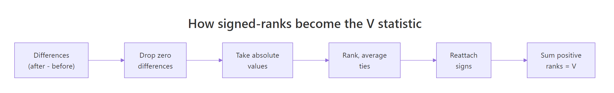
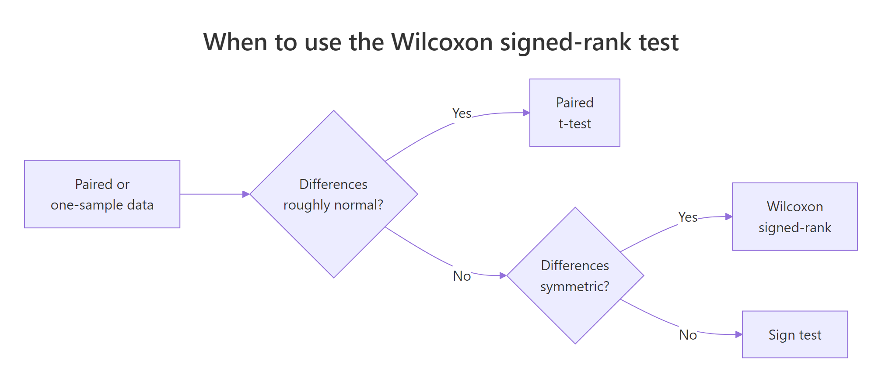
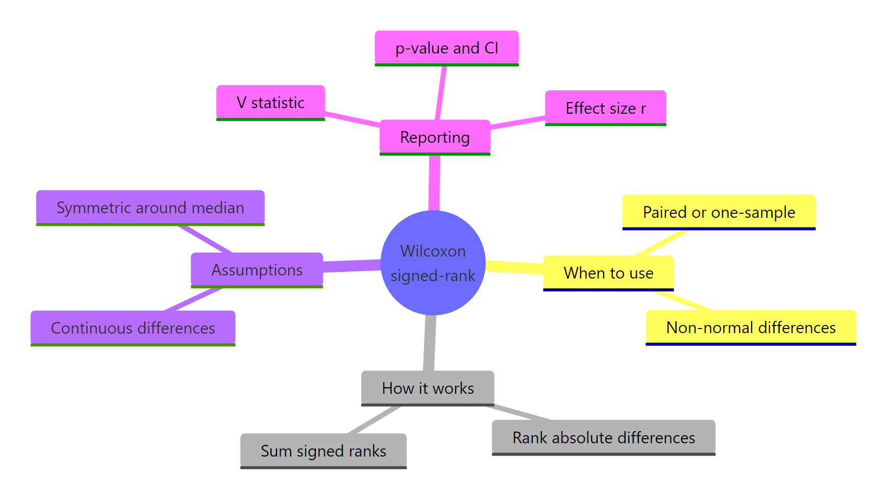

Wilcoxon Signed-Rank Test in R: Paired Data Without Normality
The Wilcoxon signed-rank test checks whether paired or one-sample observations differ in the middle (median) without assuming the differences follow a normal distribution. It works by ranking the absolute differences, attaching their original signs, and asking whether positive and negative ranks balance out.
How do you run a Wilcoxon signed-rank test in R?
Skip the theory for a moment. You measured the same thing twice on each subject (before and after) and a paired t-test would feel right, except the differences look skewed and the sample is small. The Wilcoxon signed-rank test is the rank-based answer. One call to wilcox.test() with paired = TRUE returns the V statistic, a p-value, and a confidence interval for the median difference.
Every patient's blood pressure dropped, so the sum of positive ranks is exactly zero, which is why V = 0. The p-value of 0.003 says the median difference is unlikely to be zero, and the 95 percent confidence interval [-10.0, -3.5] mmHg pins down the magnitude: a typical patient drops between 3.5 and 10 mmHg. That is the answer your reader came for, before any rank theory.
wilcox.test(x, mu = 100). Internally R subtracts mu from each observation and runs the same signed-rank machinery on the differences.Try it: Use the built-in sleep data frame to test whether drug 2 produces a different median sleep gain than drug 1 on the same 10 subjects. The pairs are matched by ID.
Click to reveal solution
Explanation: Splitting sleep by group gives two length-10 vectors aligned by subject, then paired = TRUE makes wilcox.test() work on the differences g2 - g1.
How does the signed-rank statistic actually work?
The V statistic looks mysterious until you compute one by hand. The recipe has six steps and you can run every one in plain R using rank(). Once you see the math, the test stops being a black box and becomes a tool you can troubleshoot.

Figure 1: Six steps that turn raw paired differences into the V statistic.
Let's work through a tiny example by hand and then check the answer with wilcox.test(). Six pairs are enough to see every rule (signs, ties, zero handling) in action.
The manual V of 12 matches wilcox.test() exactly. The three tied absolute differences of 2 share the average of ranks 2, 3, and 4, which is why each gets rank 3.0 instead of 2, 3, 4 in some order. The zero difference gets dropped before ranking, shrinking the effective sample size from 6 to 5. Both rules are baked into R for you, so day-to-day you call wilcox.test() and trust the math, but knowing what it's doing under the hood lets you reason about the warnings later.
Try it: Given a vector of paired differences, write code that returns the V statistic without calling wilcox.test().
Click to reveal solution
Explanation: rank(abs(nz))[nz > 0] selects the ranks whose original sign was positive, and summing those gives V.
What assumptions must your data meet?
Tutorials often say "Wilcoxon signed-rank requires symmetry" without explaining what must be symmetric. The assumption is about the distribution of paired differences, not about either original variable. The test stays valid even if before and after are wildly skewed, as long as after - before is roughly symmetric around its median. When the differences are asymmetric, the p-value still tests something meaningful (a rank-based hypothesis), but the location-shift interpretation breaks down.

Figure 2: Choosing between paired t, Wilcoxon signed-rank, and the sign test.
The full assumption list is short:
- Pairs are independent of each other. Subject A's pair tells you nothing about subject B's.
- Differences are continuous (or at least ordinal with many distinct levels). Heavy ties mean R cannot compute the exact p-value and falls back to a normal approximation.
- Differences are symmetric around the median. This is the one most often violated and most often ignored.
Let's diagnose symmetry visually and numerically on the blood pressure data from earlier.
A skewness near zero (here -0.045) and a histogram with roughly equal tails on either side of the median both support symmetry. If the skewness were larger than about |0.5| or the histogram tilted hard to one side, you would either transform the data, drop the location-shift interpretation, or move to the sign test.
Try it: Generate a clearly skewed set of paired differences and produce both the histogram and the skewness statistic.
Click to reveal solution
Explanation: Skewness above 1 signals strong right-skew. The histogram confirms it visually. With this kind of differences distribution, the signed-rank confidence interval misrepresents the median difference and the sign test is the safer choice.
How do you interpret the output and report it?
Three numbers carry almost all the information in wilcox.test() output: the V statistic, the p-value, and the confidence interval (when conf.int = TRUE). Knowing how to extract each programmatically lets you write reproducible reports without copy-paste.
The pseudo-median is a Hodges-Lehmann estimate: the median of all pairwise averages of the differences. It is the location summary the confidence interval brackets, and for the BP study it says the typical drop is 6.5 mmHg, with reasonable confidence the true drop sits between 3.5 and 10 mmHg. Always report all three numbers together, because the V statistic and p-value alone tell you only that something happened, not how big the effect is.
conf.int = TRUE. The default returns just V and a p-value. Adding conf.int = TRUE gives you the Hodges-Lehmann pseudo-median and a non-parametric CI, which is what you actually need for a publishable result.Try it: Write a function ex_report_wsr(test) that takes an htest object and returns the one-sentence report.
Click to reveal solution
Explanation: Every component of an htest object is accessible by name: statistic, p.value, conf.int, and estimate. sprintf() slots them into a template string.
How do you compute the effect size?
A p-value below 0.05 only tells you that the median difference is probably non-zero. Reviewers and readers also want to know how big the effect is, on a scale they can compare across studies. The standard non-parametric effect size for a Wilcoxon test is the rank-biserial correlation, denoted $r$, which scales between 0 (no effect) and 1 (every difference points the same way).
The intuition: convert V into a standardized z-score, then divide by the square root of the effective sample size.
$$r = \frac{|Z|}{\sqrt{N}}$$
Where:
- $Z$ is the standardized signed-rank statistic (R's normal approximation)
- $N$ is the number of non-zero paired differences
A simple route in base R is to recover $|Z|$ from the two-sided p-value with qnorm(), since the approximation reports $p = 2 \cdot \Phi(-|Z|)$.
An effect size of 0.84 is huge by the conventional Cohen-style guidelines (0.10 small, 0.30 medium, 0.50 large for $r$). Combined with a tiny p-value and a confidence interval that does not span zero, you have a complete inferential picture: the BP intervention almost certainly worked, by a clinically meaningful amount, in essentially every patient.
Try it: Re-run wilcox.test() on a different paired dataset of your choice and compute its effect size $r$.
Click to reveal solution
Explanation: The same qnorm-based recovery of $|Z|$ works for any Wilcoxon signed-rank result, as long as the test reports a normal-approximation p-value (which it does whenever ties or zeros are present, or n >= 50).
What about ties, zero differences, and exact vs approximate p-values?
Two warnings turn up almost every time you run wilcox.test() on real data:
cannot compute exact p-value with tiescannot compute exact p-value with zeroes
Neither is an error. R is telling you it switched from the exact permutation p-value (only valid with no ties and no zeros) to a normal-approximation p-value. For samples of about 30+ observations, the two agree to three decimal places. For tiny tied samples the gap matters, and you control which mode runs via exact = TRUE / FALSE.
All three calls return the same approximate p-value because R cannot honestly compute an exact one with ties and zeros present. Setting exact = FALSE and correct = TRUE makes that explicit and silences the warning, which is the cleanest pattern when you know your data has ties.
exact = FALSE once you have decided you are happy with the approximation.Try it: On the tied data above, set exact = FALSE and confirm you get a result with no warning.
Click to reveal solution
Explanation: exact = FALSE forces the normal approximation explicitly, which is what R was using anyway. The warning disappears because you have told R you are aware of the situation.
Practice Exercises
These capstone exercises combine multiple steps from the tutorial. Work them in the WebR session above so all your tutorial variables are still available.
Exercise 1: One-sided pre-vs-post test with confidence interval
A trainer measures running speed (km/h) on 15 athletes before and after a six-week program. Test whether the median speed increased (one-sided), pulling out V, p, and the confidence interval.
Click to reveal solution
Explanation: alternative = "greater" shifts the rejection region to one tail, doubling power if the direction is correct. The confidence interval becomes one-sided too, hence the upper bound of Inf.
Exercise 2: Build a full reporting function
Write wsr_report(x, y) that runs the paired test with conf.int = TRUE, computes the manual effect size $r$, and returns a one-row tibble with V, p, ci_low, ci_high, r, and magnitude (use thresholds 0.10 small, 0.30 medium, 0.50 large). Apply it to the two sleep groups.
Click to reveal solution
Explanation: data.frame() keeps the function dependency-free. Each column maps cleanly to a publishable cell in a results table.
Putting It All Together: Weight-Loss Study
A 12-week weight-loss program enrolls 20 adults. Each is weighed before and after. Differences are right-skewed because a few participants lost a lot more than the rest. Walk through every step end to end.
The skewness of -1.14 warns you that the differences are not symmetric, so the location-shift interpretation is rough. The sign of every difference is still negative, the V is still zero, and the rank-based p-value is still tiny, so the directional finding stands. You would either present the result with a caveat about asymmetry or fall back to a sign test, depending on how strict your audience is.
Summary

Figure 3: Wilcoxon signed-rank test at a glance.
| Aspect | What you do | R |
|---|---|---|
| Test paired data | wilcox.test(x, y, paired = TRUE) |
base |
| Test one sample | wilcox.test(x, mu = mu0) |
base |
| Get a confidence interval | add conf.int = TRUE |
base |
| Drop zero differences | R drops them automatically | base |
| Handle ties | add exact = FALSE to silence the warning |
base |
| Compute effect size $r$ | qnorm(p/2, lower.tail = FALSE) / sqrt(n) |
base |
| Choose vs paired t | run when differences are non-normal but symmetric | judgment |
| Choose vs sign test | run when differences are also asymmetric | judgment |
References
- Wilcoxon, F. (1945). Individual Comparisons by Ranking Methods. Biometrics Bulletin, 1(6), 80-83. Link
- R Core Team. wilcox.test documentation. Link
- Hollander, M., Wolfe, D. A., & Chicken, E. (2013). Nonparametric Statistical Methods, 3rd ed. Wiley.
- Conover, W. J. (1999). Practical Nonparametric Statistics, 3rd ed. Wiley.
- Bauer, D. F. (1972). Constructing Confidence Sets Using Rank Statistics. Journal of the American Statistical Association, 67(339), 687-690. Link
- Rosenthal, R. (1991). Meta-Analytic Procedures for Social Research. Sage. (effect size $r$)
- Hodges, J. L., & Lehmann, E. L. (1963). Estimates of Location Based on Rank Tests. Annals of Mathematical Statistics, 34(2), 598-611. Link
Continue Learning
- t-Tests in R, the parametric counterpart for paired or one-sample data when differences are roughly normal.
- When to Use Nonparametric Tests in R, a decision guide for choosing rank-based methods over their parametric versions.
- Effect Size in R, a deeper dive into reporting effect sizes alongside p-values.